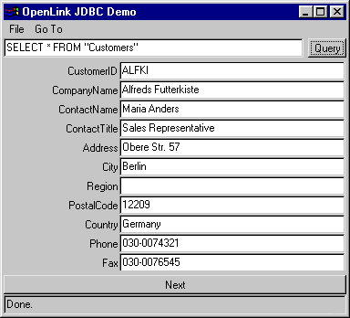

This is a demonstration of an applet using OpenLink's JDBC Driver.
When the Web browser has finished loading the Java applet, a window containing the JDBC applet will appear:
When it is running, click on the "Query" button to execute a SQL query against the default connection URL. If successful, you should see the first row of the resultset filling the applet window:

Click on the "Next" button to retrieve the next row, and so on, until you have reached the end of the resultset.
To change the connection URL, select "File|Set Connection URL.." from the menu. A dialog box will appear, enabling you to change the Driver and the connection URL:

Please note that due to the applet security restrictions, it is only possible to connect to the same server IP as the Web server.
The Java source for this applet